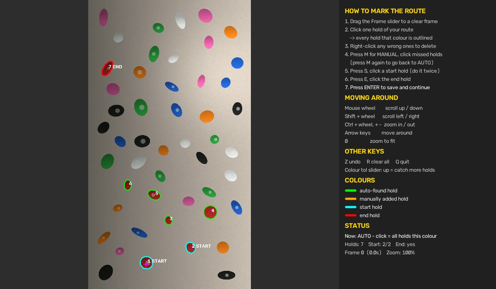
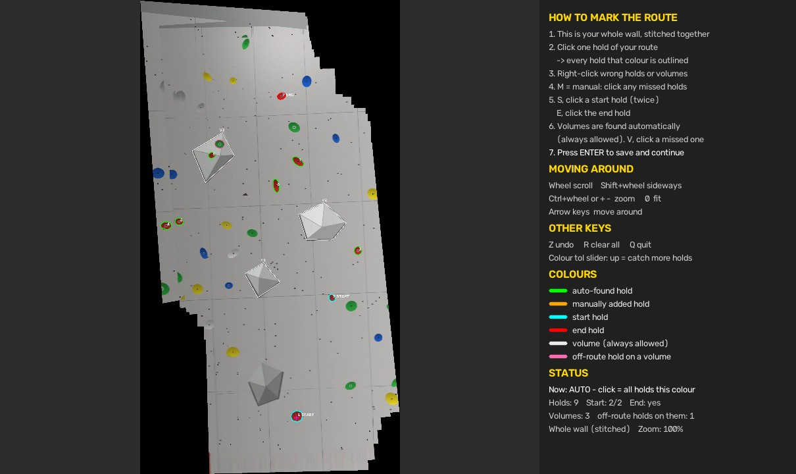

Climbers film their attempts to study their "beta", the sequence of moves that gets you up a route. I built BetaVision to make that footage something you can actually analyze: it takes a phone video of a climb and turns it into an annotated breakdown.
You mark the route's holds once, and it produces a video with:
- a full-body skeleton following the climber
- every hold on the route outlined and numbered
- holds lighting up while a hand or foot is on them
- hand-written sticky notes like "heel hook" pinned to the right hold at the right moment
- a CONGRATULATIONS banner when both hands match the final hold
The hard part was making all of that work on real, handheld gym footage.
Finding the holds in one click
Routes in a gym are set by colour, so you click one hold and BetaVision outlines every hold of that colour. Gym lighting is uneven, so I flatten it first and then match colours in CIELAB, a colour space that measures colour closer to how our eyes see it.
Grey, white and black holds were trickier because they're basically the same colour as the wall. Those get found by their curved outlines instead. For anything auto-detect still misses, there's a manual mode (built on GrabCut) where you click the hold yourself.

Volumes, with gym rules
Volumes are the big geometric shapes bolted onto the wall. BetaVision finds them automatically from their straight edges and flat polygon faces, then applies the same rules climbers do: neutral volumes count for every route, coloured ones only count if they match the route, and off-route holds bolted onto a volume are cut out of it.
Following a handheld camera
When someone films you on their phone, the camera pans, tilts and zooms the whole time. If the hold outlines just stayed where you drew them, they'd drift off the holds within seconds.
So BetaVision tracks the camera frame by frame. It follows small patches of the image between frames (Lucas–Kanade optical flow) and chains together homographies, the transform that maps one view of a flat wall onto another. Small errors pile up over a long video, so it regularly re-anchors itself with ORB feature matching to stop the drift. The result is outlines that stay locked to their holds while the phone moves.
If the camera moved, BetaVision also stitches the frames into one panorama of the whole wall. Each pixel is the median across frames, which has a nice side effect: the climber disappears. That means you can mark a tall route in one place instead of chasing it across the video.

Tracking the climber
For the body, I use MediaPipe Pose and keep the 16 joints that matter for climbing. Every frame, each hand and foot gets matched to the nearest hold or volume, which is how the video knows what to light up. The joint angles and contacts can also be exported to a CSV.
Making it easy to run
I wanted it to be usable without opening a terminal, so the same analysis code is wrapped in a small local web app: a FastAPI server and a browser-based hold picker. On Windows it starts from a double-click launcher, and everything stays on your computer.
After a run, you get the annotated video plus how much of the climb was tracked, your top-out time, the sequence of holds you used, and the range of your joint angles.
How well it works
I've been using it on my own gym climbs. To measure it properly, I also tested it on 16 synthetic test walls with uneven lighting, chalk, seams and bolt holes.
All numbers are on synthetic test walls.
BetaVision is built with Python, OpenCV, MediaPipe, FastAPI and JavaScript. I designed and built it solo, and the code is open source under the MIT license.